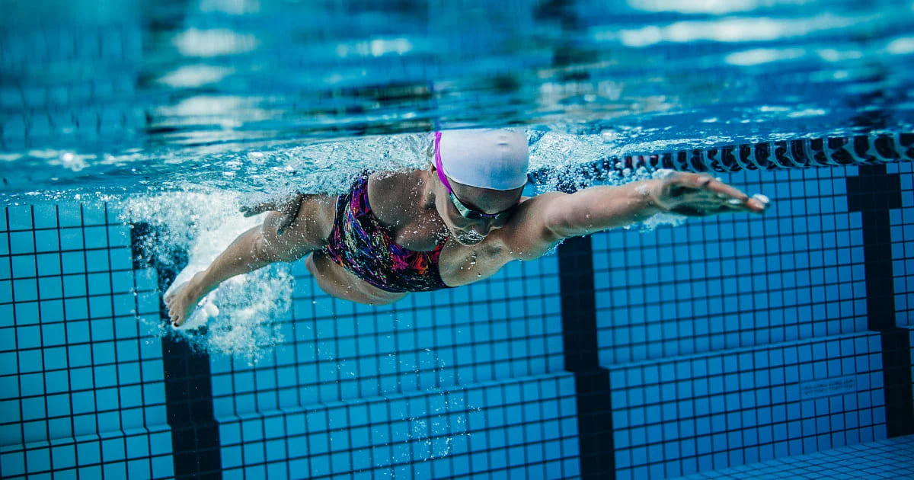

¡Buenas noticias para los amantes del deporte! En Colsubsidio seguimos comprometidos con habilitar nuevos espacios
que contribuyan a tu bienestar, acercándolos a los lugares de trabajo o residencia de nuestros afiliados. Por ello,
hemos logrado nuevas alianzas con sedes deportivas estratégicamente ubicadas en Bogotá.
Entre el 4 y el 8 de enero estarán habilitadas las inscripciones a nuestras Escuelas
Deportivas, tanto para estudiantes nuevos como antiguos, quienes podrán beneficiarse de estas nuevas alianzas.
Además, ampliamos nuestra cobertura en natación, fútbol, tenis de campo, patinaje y más.
Nuevas sedes y disciplinas
- Parque El Tunal: tenis de campo, patinaje y fútbol.
Calle 48B Sur y Avenida Boyacá.
- Parque Juan Amarillo: tenis de campo y fútbol.
Carrera 111 A n.º 88A-22.
- PRD Parque Recreo Deportivo: tenis de campo y fútbol.
Carrera 60 n.º 63-75.
- CEFE Tunal: natación, baloncesto y voleibol.
Calle 56 Sur n.º 22-60, Tunjuelito.
- CEFE Cometas: natación, fútbol, patinaje, baloncesto y voleibol.
Transversal 29A con Calle 101A, Suba.
- CEFE Fontanar del Río: natación, fútbol, patinaje, baloncesto y voleibol.
Avenida Calle 145
n.º 138A-10, Tibabuyes.
- CEFE San Cristóbal: natación, fútbol, patinaje, baloncesto y voleibol.
Calle 17A Sur n.º 2A-60 Este, San Blas.
- Parque San Andrés: fútbol.
Calle 82 n.º 100A-91.
Sedes propias
Estas sedes cuentan con instalaciones modernas diseñadas para ofrecerte una experiencia única.
- Club La Colina:
natación, squash, taekwondo, tenis de campo, fútbol, baile deportivo y patinaje.
Av Suba n.º 131-90, Bogotá.
- Club Bellavista:
natación, squash, taekwondo, tenis de campo, fútbol, baile deportivo y patinaje.
Autopista norte n.º 245-91, Bogotá.
- Club El Cubo:
natación, squash, taekwondo, tenis de campo, fútbol y baile deportivo.
Avenida carrera 30 n.º 52 - 77, Bogotá.
- Club 195:
taekwondo, fútbol y patinaje.
Calle 195 n.º 48-55, Suba, Bogotá.
- BLOC Bosa:
natación, taekwondo, fútbol y baile deportivo.
Avenida Calle 57R sur n.º 76a-15, Ciudad Bolívar, Bogotá.
- BLOC Plaza de las Américas:
natación, taekwondo, tenis de mesa, fútbol y baile deportivo.
Carrera 71D n.º 6-94 Sur, local 4601,
Bogotá (Centro Comercial Plaza de las Américas, entrada 4, piso 4).
- BLOC 20 de Julio:
taekwondo, fútbol y baile deportivo.
Calle 25B Sur n.º 5-87, piso 4, Bogotá.
- BLOC Ricaurte:
taekwondo y fútbol.
Carrera 27 n.º 11-54, piso 3, Bogotá.
- BLOC Maiporé:
taekwondo y fútbol de salón.
Calle 30 Sur n.º 2E - 36 sur, Soacha.
- BLOC Piscina Suba:
natación.
Carrera 91 n.º 127 - 30, Suba, Bogotá.
Más de 20 sedes aliadas en Bogotá y municipios cercanos
También contamos con múltiples opciones en Bogotá y municipios como Funza, Facatativá y Soacha, donde podrás mantenerte activo.
- Colegio Ciudadela Colsubsidio: baloncesto, karate, patinaje, taekwondo y voleibol.
Calle 83 n.º 110-58, Engativá, Bogotá.
- Colegio Colsubsidio Chicalá: baloncesto, fútbol Sala, patinaje, taekwondo y voleibol.
Carrera 87 n.º 53C Sur-26, Bogotá.
- Colegio Colsubsidio Maiporé: baloncesto y patinaje.
Autopista sur Carrera 2 n.º 10-157 Sur.
- Colegio Colsubsidio Norte: baloncesto, fútbol, natación, patinaje, taekwondo y voleibol.
Calle 151 n.º 15-70, Bogotá.
- Club Egresados de la Universidad Libre: fútbol.
Avenida 70 n.º 522, Bogotá.
- Aquacenter: natación.
Cra. 1 #12d 60, Soacha.
- Aquakids: natación.
Carrera 69c n.º 37A-80, Bogotá.
- Atlantic Center: natación.
Carrera 16 n.º 30-63, Bogotá.
- Colegio Militar Juan José Rondón: natación.
Calle 15 n.º 2c-20, Funza.
- Fundec: natación.
Avenida calle 15 n.º 12-75, Facatativá.
- Parque Autopista Sur: natación.
Avenida calle 57R Sur con carrera 72.
- Parque La Serena: natación.
Calle 90A n.º 85-70, Bogotá.
- Skualos: natación.
Transversal 72c Bis n.º 44f Sur, Bogotá.
- Parque Nacional: patinaje y taekwondo.
Calle 35 n.º 3-50, Bogotá.
- Unidad deportiva El Salitre: patinaje.
Calle 63 n.º 68 -45.
¡No te quedes sin cupo!
Aprovecha esta oportunidad para inscribirte y empezar el año entrenando en grande. Haz clic aquí para conocer más
detalles y realizar tu inscripción.